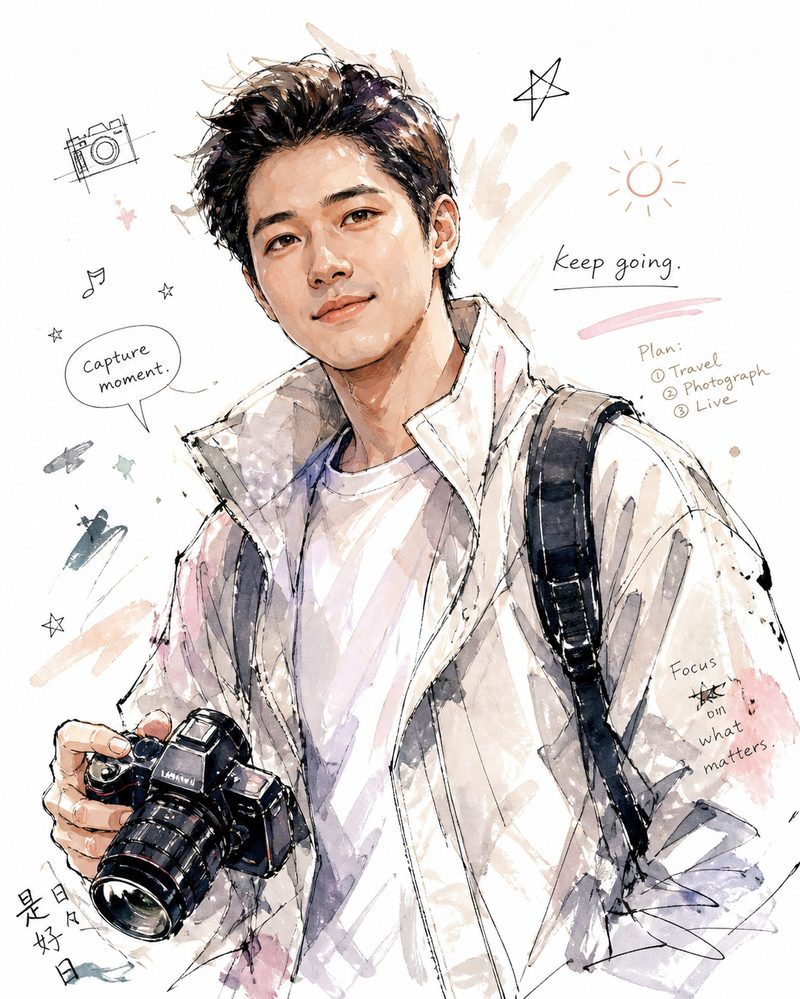
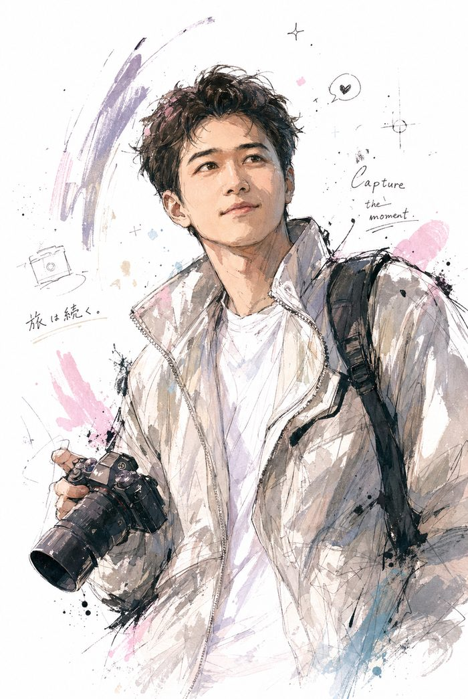

LA 同城约拍yolo · Vol.01
Los Angeles · Portrait
在洛杉矶
拍一组松弛感
人像
Capture the moment, not the pose.

富士直出
Fujifilm X-T5
底片全送
All RAW incl.
$99 起
1hr · Solo
yolo ✦ Nicklaus01 / 06
关于我 · About摄影师 Nicklaus
比起按下快门
我更在意情绪

“一个不经意的
眼神，一句
轻声的笑。”
很多人在镜头前会紧张，不知道手放哪、该不该笑。
所以我不太喊“看镜头”。边走边聊，等你放松下来，那些真正属于你的瞬间自己就会出现。
让每一个值得被记住的瞬间，在照片里永远鲜活。
Natural · Vintage · Fresh
yolo ✦ Capture The Moment02 / 06
风格 · StyleFujifilm X-T5
为什么是
富士直出
颜色在相机里就定好了，不靠后期“磨皮滤镜”。
01
自然的颜色
富士胶片模拟直出，最大程度还原肤色和光线
02
三种擅长风格
自然感 · 复古风 · 小清新，拍前可以一起定调
03
一支镜头走遍 LA
18–50mm 变焦，街头、海边、草坪都能拍
04
当天拿到底片
拍完当日出底片，底片全部送你，不藏片
拍出来的不是“网红模板”，
是你本来的样子。
是你本来的样子。
yolo ✦ Naturally Cinematic03 / 06
价目 · Portrait单人 / 双人
约拍套餐
速拍纯享1HR
$99双人 $199
- 9 张精修，底片全送（150+）
- 当日出底片，挑片后 3 天精修完
深度精享3HR
$299双人 $599
- 35 张精修，底片全送（300+）
- 当日先出 9 张精修 · 可选双场地
- 赠修眉，可代购手工花束
全天尊享8HR
$599双人 $1199
- 120 张精修 + 3 分钟微电影
- LA 全城任选 · 赠精装手工相册
- 美甲 / 花束 / 男士剪发 三选一
前两档不含车费04 / 06
价目 · Wedding婚礼跟拍
婚礼跟拍
From the night before, to the last dance.
速拍纯享1HR
$199
- 12 张精修，底片全送（200+）
- 当日出底片，3 天内精修完
双景精享3HR
$599
- 45 张精修，底片全送（500+）
- 双场地全程记录 · 当日先出 9 张
全天尊享24HR
$1799
- 150 张精修 + 3 分钟微电影
- 婚前一晚起纪实记录 · 赠精装相册
- 美甲 + 修眉 + 花束 + 男士剪发 全含
前两档不含车费05 / 06
预约 · Booking三步锁档期
想拍？
三步就能锁档期
01
选套餐和时间
主页简介里有预约页，选好档期、留下拍摄地点
02
私信确认细节
风格、服装、场地，拍前一起聊清楚
03
付半价定金
定金到账即视为合同生效，档期正式锁定
拍完约 7 天精修完毕 · 取消预约请提前一周
前两档套餐不含车费
前两档套餐不含车费
评论区扣「约拍」
我把档期表发你 ✦
yolo ✦ see you in LA06 / 06